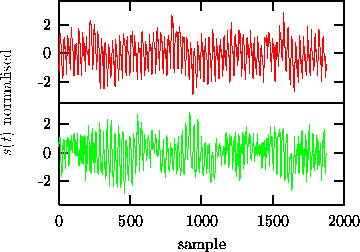
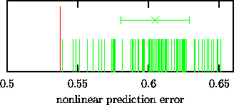
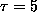
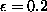
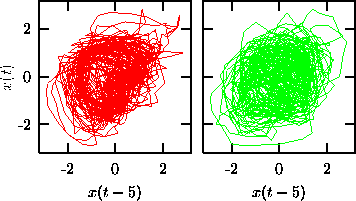

This example is maybe too obvious, it was meant only to illustrate that the hypothesis we test against is often not what we would actually accept to be true. Other, less obvious and more common, examples include signals which are known (or found by inspection) to be non-stationary (which is not covered by most null hypotheses), or signals which are likely to be measured in a static nonlinear, but non-invertible way. Before we discuss these two specific caveats in some more detail, let us illustrate the delicacy of these questions with a real data example.

Figure: Intracranial neuronal potential recording during an epileptic seizure (upper) and a surrogate data set with the same linear correlations and the same amplitude distribution (lower). The data was kindly provided by K. Lehnertz and C. Elger.

Figure: Surrogate data test for the data shown in Fig.18. Since the prediction error is lower for the data (longer line) than for 99 surrogates (shorter lines), the null hypothesis may be rejected at the 99% level of significance. The error bar indicates the mean and standard deviation of the statistic computed for the surrogates.
Figure 18 shows as an intra-cranial recording of the neuronal electric field during an epileptic seizure, together with one iteratively generated surrogate data set [30] that has the same amplitude distribution and the same linear correlations or frequency content as the data. We have eliminated the end-point mismatch by truncating the series to 1875 samples. A test was scheduled at the 99% level of significance, using nonlinear prediction errors (see Eq.(5), m=3, , ) as a discriminating statistics. The nonlinear correlations we are looking for should enhance predictability and we can thus perform a one-sided test for a significantly smaller error. In a test with one data set and 99 surrogates, the likelihood that the data would yield the smallest error by mere coincidence is exactly 1 in 100. Indeed, as can be seen in Fig. 19, the test just rejects the null hypothesis.

Figure: Left: Same data set as in Fig. 18, rendered in time delay coordinates. Right: A surrogate data set plotted in the same way.
Unfortunately, the test itself does not give any guidance as to what kind of nonlinearity is present and we have to face notoriously ill-defined questions like what is the most natural interpretation. Similar spike-and-wave dynamics as in the present example has been previously reported [47] as chaotic, but these findings have been questioned [48]. Hernández and coworkers [49] have suggested a stochastic limit cycle as a simple way of generating spike-and-wave-like dynamics.
If we represent the data in time delay coordinates -- which is what we would usually do with chaotic systems -- the nonlinearity is reflected by the ``hole'' in the centre (left panel in Fig. 20). A linear stochastic process could equally well show oscillations, but its amplitude would fluctuate in a different way, as we can see in the right panel of the same figure for an iso-spectral surrogate. It is difficult to answer the question if the nonlinearity could have been generated by a static mechanism like the measurement process (beyond the invertible rescaling allowed by the null hypothesis). Deterministic chaos in a narrower sense seems rather unlikely if we regard the prediction errors shown in Fig. 19: Although significantly lower than that of the surrogates, the absolute value of the nonlinear prediction error is still more than 50% of the rms amplitude of the data (which had been rescaled to unit variance). Not surprisingly, the correlation integral (not shown here) does not show any proper scaling region either. Thus, all we can hand back to the clinical researchers is a solid statistical result but the insight into what process is generating the oscillations is limited.
A recent suggestion for surrogates for the validation of unstable periodic
orbits (UPOs) may serve as an example for the difficulty in interpreting
results for more fancy null hypothesis. Dolan and coworkers [24]
coarse-grain amplitude adjusted data in order to extract a transfer matrix that
can be iterated to yield typical realisations of a Markov chain. The rationale there is to test if the finding of a certain number of UPOs could
be coincidental, that is, not generated by dynamical structure. Testing
against an order D Markov model removes dynamical structure beyond the
``attractor shape'' (AS) in D+1 dimensions. It is not clear to us what the
interpretation of such a test would be. In the case of a rejection, they would
infer a dynamical nature of the UPOs found. But that would most probably mean
that in some higher dimensional space, the dynamics could be successfully
approximated by a Markov chain acting on a sufficiently fine mesh. This is at
least true for finite dimensional dynamical systems. In other words, we cannot
see what sort of dynamical structure would generate UPOs but not show its
signature in some higher order Markov approximation.
The rationale there is to test if the finding of a certain number of UPOs could
be coincidental, that is, not generated by dynamical structure. Testing
against an order D Markov model removes dynamical structure beyond the
``attractor shape'' (AS) in D+1 dimensions. It is not clear to us what the
interpretation of such a test would be. In the case of a rejection, they would
infer a dynamical nature of the UPOs found. But that would most probably mean
that in some higher dimensional space, the dynamics could be successfully
approximated by a Markov chain acting on a sufficiently fine mesh. This is at
least true for finite dimensional dynamical systems. In other words, we cannot
see what sort of dynamical structure would generate UPOs but not show its
signature in some higher order Markov approximation.